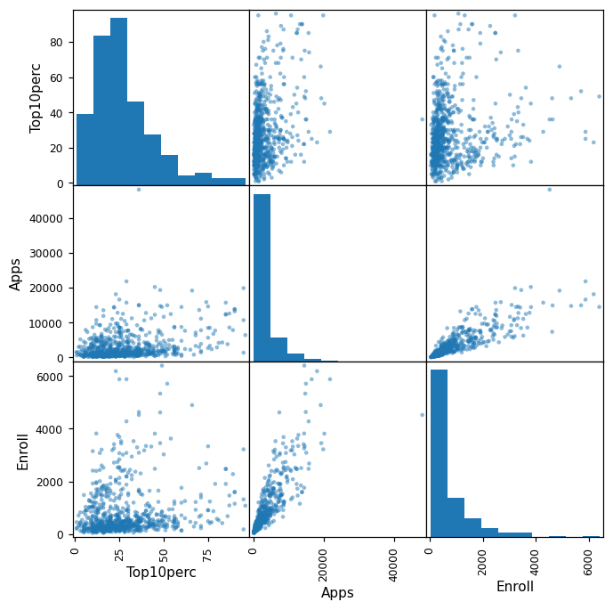
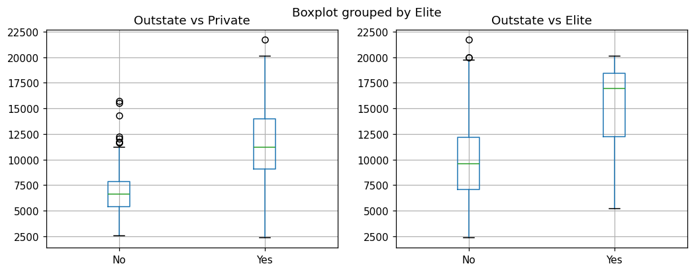
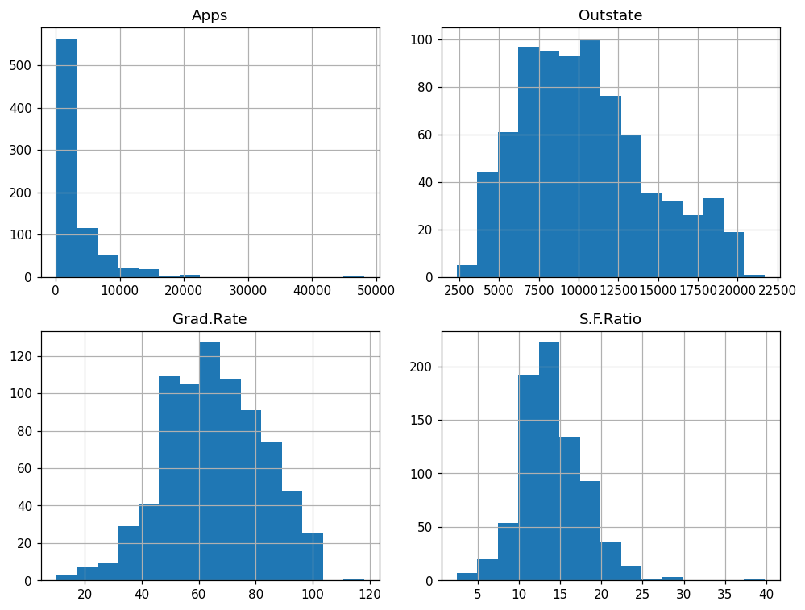
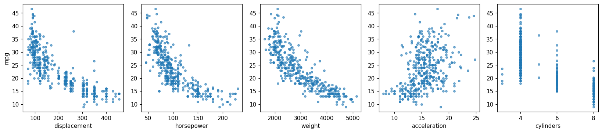
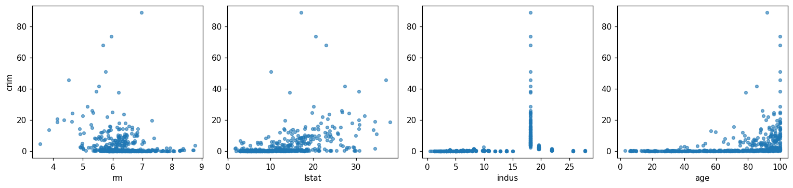

Chapter 2 · exercises · book pages 63–68
Exercises
Seven conceptual questions that test whether the vocabulary of section 2.1 and 2.2 actually stuck, and three applied ones run against real datasets. The statement of each exercise sits outside; the worked answer is folded underneath — try it first, then open it.
Reading
- Try first Every answer is inside a folded panel. The exercises are the point of the chapter — reading a solution you could not produce feels like progress and isn't.
- Conceptual 1–7 No code. If 1, 3, 5 and 6 give you trouble, re-read sections 2.2.1–2.2.2; if 2 or 4 do, re-read 2.1.5.
- Applied 8–10
Run the code yourself. All outputs and figures
below were produced by executing the blocks with the lab's setup
(ISLP 0.4.1); College.csv ships with the book's website, Boston
loads from
ISLP.load_data.
Key ideas these exercises drill
Whether a flexible method helps depends on n, p, how non-linear the truth is, and how much noise there is — the four horses of section 2.2.2. Every problem can be classified by response type (regression vs classification) and by goal (prediction vs inference), which also gives you n and p for free. The five-curve sketch in exercise 3 is the bias–variance trade-off, drawn from memory. And KNN at exercise 7 is the whole of section 2.2.3 with six rows of arithmetic.
- n, p, flexibility, noise
- the five-curve sketch
- KNN distances by hand
- describe() as a summary
- missing values in Auto
- reading scatterplot matrices
Conceptual (exercises 1–7)
When does flexibility help?
For each scenario, say whether a flexible statistical learning method should beat an inflexible one — and justify it:
- n is extremely large and p is small.
- p is extremely large and n is small.
- The relationship between predictors and response is highly non-linear.
- The variance of the error terms, $\sigma^2$, is extremely high.
Covers: section 2.2.2 — bias, variance, and what each of n, p and σ² does to them.
Answer
- Flexible is better. With that much data, the variance of a complex fit is pinned down — the model has plenty of examples to learn every wiggle from, so the bias of a stiff model (its inability to follow the truth) becomes the limiting error. Freedom is cheap when data is plentiful.
- Inflexible is better. Many predictors spread n observations thinly across a huge space — neighbours in p dimensions stop being neighbours, so a flexible method estimates each local wiggle from a handful of points and swings wildly between samples. High variance, little data to control it.
- Flexible is better. If the truth really is wiggly, a simple assumed shape has structural bias no amount of data will fix: it is wrong the same way every time. Flexibility is the only way to shrink that error.
- Inflexible is better. The noise is already a large floor under every method. A flexible model will also spend its freedom fitting that noise — you pay variance on top of an irreducible error that was high to begin with. A simple model averages the noise out instead.
The pattern: flexibility pays when the error it removes is bias (small n is not the problem, complex truth is), and hurts when the error it adds is variance (small n, many p, lots of noise). That is the trade-off of section 2.2.2 applied to four corners of the map.
Regression or classification? Prediction or inference?
For each scenario: is it a classification or a regression problem, is the interest in inference or prediction, and what are n and p?
- Data on the top 500 US firms: profit, number of employees, industry, CEO salary. We want to understand which factors affect CEO salary.
- We are launching a new product and want to know whether it will succeed or fail. We collect data on 20 similar past products: their outcome, price charged, marketing budget, competition's price, and ten other variables.
- We want to predict the % change in the USD/Euro exchange rate from weekly changes in world stock markets, using weekly data for all of 2012 (each week records the exchange-rate change and the changes in the US, British and German markets).
Covers: sections 2.1.1 (prediction vs inference) and 2.1.5 (regression vs classification); n and p from Chapter 1's notation.
Answer
| Scenario | Problem | Goal | n | p |
|---|---|---|---|---|
| (a) CEO salary | Regression — salary is a number | Inference — “understanding which factors affect” it | 500 | 3 (profit, employees, industry) |
| (b) Product success | Classification — success / failure | Prediction — “whether it will be a success” | 20 | 13 (price, marketing, competition price + 10 others) |
| (c) Exchange rate | Regression — a % change is a number | Prediction — “predicting the % change” | 52 (weeks) | 3 (US, UK, German market changes) |
Two details worth noticing. The response decides the problem type — never the number of predictors: scenario (c) has three inputs but still regresses. And n comes from the rows you actually collected: 50 firms is 50 rows even if each row carries 30 measurements; scenario (b) has only n = 20, which already hints that a flexible model will struggle there.
The five-curve sketch
Draw, on a single plot with flexibility on the x-axis and error on the y-axis, five labelled curves: squared bias, variance, training error, test error, and Bayes (irreducible) error. Then explain why each has the shape you drew.
Covers: sections 2.2.1–2.2.2 — the whole chapter compressed into one figure.
Answer
The shapes, from left (stiff) to right (flexible):
| Curve | Shape | Why |
|---|---|---|
| Bayes / irreducible error | horizontal line, low | The noise in the data. No method, flexible or not, can get under it — it does not move with flexibility. |
| Squared bias | falls from high, flattens near zero | A stiff model cannot follow the truth (wrong in the same way every time); as flexibility grows, the assumed shape stops being a constraint. |
| Variance | starts near zero, rises | A stiff model barely changes when you redraw the data; a flexible model changes a lot, because it has enough freedom to follow each sample's noise. |
| Training error | falls, never rises | More freedom can always fit your own data at least as well — a flexible method can pass through the points. This is the only monotone curve of the five. |
| Test error | U shape | It is bias² + variance + a constant: falling bias pulls it down at first, rising variance pushes it back up later, and the bottom is the balance point. |
Handy check for your own sketch: training error always sits below test error, the two can meet only on the far right if at all, and test error can never dip below the Bayes line. If your drawing violates any of those, redraw it — and compare with the interactive chart on the 2.2 page, which draws bias², variance and σ² stacked for real.
Invent the applications
Describe three real-life applications each for (a) classification, (b) regression, and (c) cluster analysis. For (a) and (b): name the response, the predictors, and whether the goal is inference or prediction.
Covers: sections 2.1.1, 2.1.4 and 2.1.5.
Answer (three per type — yours will differ)
(a) Classification — response is a category:
- Spam filter. Response: spam / not spam. Predictors: words and links in the message, sender history, time of day. Prediction — nobody needs an explanation, they need each incoming message sorted.
- Credit default. Response: default / no default. Predictors: income, payment history, credit utilisation, employment. Prediction, though regulators will also demand inference-flavoured evidence about which factors drive the decision.
- Which treatment works for this patient. Response: one of K treatment outcomes. Predictors: symptoms, lab results, age, prior history. Prediction, with an inference side: clinicians want to know which biomarkers matter.
(b) Regression — response is a number:
- House price. Response: sale price. Predictors: size, rooms, location, age, condition. Prediction (an estimate for a listing).
- Effect of advertising on sales. Response: sales. Predictors: TV, radio, newspaper budgets. Inference — the question is which medium matters and by how much, which is literally this book's running example in Chapter 3.
- Energy demand tomorrow. Response: kWh. Predictors: forecast temperature, day of week, holiday calendar, lagged demand. Prediction.
(c) Cluster analysis — no response at all:
- Customer segmentation for marketing — the book's own example: group buyers before designing a campaign, because there is no answer column to predict.
- Grouping patients by symptom and test profiles to see whether diseases fall into subtypes nobody has named yet.
- Grouping documents, products or crime reports by similarity for triage and search — you learn the groups, then a human decides what they mean (this is the unsupervised mode of the 2.1 demo).
Very flexible vs less flexible: pros and cons
What are the advantages and disadvantages of a very flexible approach (versus a less flexible one) for regression or classification? When would you prefer each?
Covers: sections 2.1.3 and 2.2.2.
Answer
| Very flexible | Less flexible | |
|---|---|---|
| Advantages | Can follow genuinely complex, non-linear shapes; low bias; when there is plenty of data, it extracts structure a simple model would average away. | Fast and works with small n; interpretable — you can read coefficients and defend them; resistant to fitting noise, so results are stable across resamples. |
| Disadvantages | Needs lots of data; high variance — it can overfit noise and change a lot under a new sample; hard to explain, so useless when the goal is understanding. | Bias: if the truth is curved, a straight-line model is wrong the same way every time and more data will not save it. |
| Prefer | Large n, complex/non-linear relationship, prediction is the only goal, and you can validate on held-out data. | Small n, noisy data (large σ²), roughly linear truth, or the goal is inference — a story a stakeholder can check. |
The tie-breaker is always the same: measure which one predicts better on data neither model trained on (section 2.2.1, implemented for real in Chapter 5).
Parametric vs non-parametric
Describe the differences between a parametric and a non-parametric approach. What are the advantages and disadvantages of the parametric one?
Covers: section 2.1.2.
Answer
Parametric methods assume the form of f first (e.g. a straight line, or a polynomial), then estimate the few coefficients that fit it to the data. Non-parametric methods commit to no fixed form; they build a flexible surface that stays close to the data (KNN, splines).
| Parametric | Non-parametric | |
|---|---|---|
| Estimating | A handful of coefficients | Effectively a value at every point of the input space |
| Advantages | Needs less data; fast; the fit compresses to a short, readable formula — the coefficients are the interpretation. | No assumed shape to be wrong about; can capture arbitrary curves when data allows. |
| Disadvantages | If the chosen shape is wrong, the error is baked in — bias that more data cannot remove. | Needs much more data; can fit noise (variance); the result is a surface, not a sentence — hard to explain. |
Remember the two-step signature of parametric methods: choose a form, then fit coefficients. If you cannot point to those two steps in a method, it is probably non-parametric — the KNN slider on the 2.1 page fits no coefficients at all.
KNN by hand on six rows
A training set with six observations, three predictors and one qualitative response:
| Obs. | X1 | X2 | X3 | Y |
|---|---|---|---|---|
| 1 | 0 | 3 | 0 | Red |
| 2 | 2 | 0 | 0 | Red |
| 3 | 0 | 1 | 3 | Red |
| 4 | 0 | 1 | 2 | Green |
| 5 | −1 | 0 | 1 | Green |
| 6 | 1 | 1 | 1 | Red |
Predict Y at X1 = X2 = X3 = 0 with K-nearest neighbours:
- Compute the Euclidean distance from each observation to the test point.
- Prediction with K = 1? Why?
- Prediction with K = 3? Why?
- If the Bayes decision boundary here is highly non-linear, would the best K be large or small? Why?
Covers: section 2.2.3 (KNN classifier) and 2.1.2 (flexibility).
Answer
(a) The test point is the origin, so each distance is $\sqrt{X_1^2 + X_2^2 + X_3^2}$:
| Obs. | Calculation | Distance | Y |
|---|---|---|---|
| 1 | $\sqrt{0+9+0}$ | 3.00 | Red |
| 2 | $\sqrt{4+0+0}$ | 2.00 | Red |
| 3 | $\sqrt{0+1+9}$ | 3.16 | Red |
| 4 | $\sqrt{0+1+4}$ | 2.24 | Green |
| 5 | $\sqrt{1+0+1}$ | 1.41 | Green |
| 6 | $\sqrt{1+1+1}$ | 1.73 | Red |
(b) K = 1 → Green. The single nearest observation is obs. 5 (distance 1.41), and its label is Green.
(c) K = 3 → Red. The three nearest are obs. 5 (1.41, Green), obs. 6 (1.73, Red) and obs. 2 (2.00, Red). That is two Reds to one Green, so the majority vote is Red. Note the nearest neighbour itself voted Green — this is exactly why raising K changes answers, and why it stabilises them.
(d) Small K. A highly non-linear Bayes boundary wiggles a lot over short distances, so the classifier must be allowed to change its mind locally — that means a small neighbourhood. A large K averages over a wide area and produces a nearly smooth, nearly linear boundary, which would cut straight through a wiggly truth (high bias). The usual caveat still applies: too small and you chase noise (high variance) — you want the small K that still beats its neighbours on test data.
Applied (exercises 8–10)
The College data set
777 US colleges and universities with 18 recorded variables (private/public, applications, enrolment, top-decile percentages, costs, faculty credentials, graduation rate…). Load it, give it a proper index, summarise it, plot it, and build an Elite flag from Top10perc.
Covers: lab 2.3.7 (reading CSVs, indices) and 2.3.9 (describe, boxplot, histograms).
Answer
(a–b) Read it, then fix the index. The first
column of the file is the university name, which pandas reads
as an ordinary column called Unnamed: 0. Both of
the book's routes — index_col=0 at read time, or
rename + set_index afterwards — give
the same frame:
college = pd.read_csv('College.csv')
college.shape
college2 = pd.read_csv('College.csv', index_col=0)
college3 = college.rename({'Unnamed: 0': 'College'}, axis=1)
college3 = college3.set_index('College')
college = college3
print(college2.head(3).iloc[:, :5])shape: (777, 19)
Private Apps Accept Enroll Top10perc
Abilene Christian University Yes 1660 1232 721 23
Adelphi University Yes 2186 1924 512 16
Adrian College Yes 1428 1097 336 22The index now holds names; columns starts at
Private.
(c) Numerical summary. describe()
on 17 numeric columns — transposed here so it fits; each row is
a variable, each column a statistic:
college.describe().round(2).T count mean std min 25% 50% 75% max
Apps 777.0 3001.64 3870.20 81.0 776.0 1558.0 3624.0 48094.0
Accept 777.0 2018.80 2451.11 72.0 604.0 1110.0 2424.0 26330.0
Enroll 777.0 779.97 929.18 35.0 242.0 434.0 902.0 6392.0
Top10perc 777.0 27.56 17.64 1.0 15.0 23.0 35.0 96.0
Top25perc 777.0 55.80 19.80 9.0 41.0 54.0 69.0 100.0
F.Undergrad 777.0 3699.91 4850.42 139.0 992.0 1707.0 4005.0 31643.0
P.Undergrad 777.0 855.30 1522.43 1.0 95.0 353.0 967.0 21836.0
Outstate 777.0 10440.67 4023.02 2340.0 7320.0 9990.0 12925.0 21700.0
Room.Board 777.0 4357.53 1096.70 1780.0 3597.0 4200.0 5050.0 8124.0
Books 777.0 549.38 165.11 96.0 470.0 500.0 600.0 2340.0
Personal 777.0 1340.64 677.07 250.0 850.0 1200.0 1700.0 6800.0
PhD 777.0 72.66 16.33 8.0 62.0 75.0 85.0 103.0
Terminal 777.0 79.70 14.72 24.0 71.0 82.0 92.0 100.0
S.F.Ratio 777.0 14.09 3.96 2.5 11.5 13.6 16.5 39.8
perc.alumni 777.0 22.74 12.39 0.0 13.0 21.0 31.0 64.0
Expend 777.0 9660.17 5221.77 3186.0 6751.0 8377.0 10830.0 56233.0
Grad.Rate 777.0 65.46 17.18 10.0 53.0 65.0 78.0 118.0Two things jump out immediately: applications vary enormously (81 to 48,094 — mean far above the median, so a few giants dominate), and the maximum Grad.Rate is 118, which is impossible for a percentage. A real dataset with a real error in it.
(d) Scatterplot matrix of the first three requested columns:
fig, ax = subplots(figsize=(7, 7))
pd.plotting.scatter_matrix(college[['Top10perc', 'Apps', 'Enroll']],
ax=ax);
(e) Outstate tuition by private/public — left panel:
college.boxplot('Outstate', by='Private');(f) The Elite flag. Bin Top10perc at 50% and count:
college['Elite'] = pd.cut(college['Top10perc'], [0, 50, 100],
labels=['No', 'Yes'])
college['Elite'].value_counts()Elite
No 699
Yes 78The bins printed in the book are a typo — read them as prose
The exercise text prints
pd.cut(..., [0, 0.5, 1]), but Top10perc is a
percentage on a 0–100 scale, so those edges sort
every row into NaN and you get “no elite universities” — not
the answer the prose (“exceeds 50%”) asked for:
with the bins printed in the book, [0, 0.5, 1]:
Top10perc
NaN 774
Yes 3
No 0
Name: count, dtype: int64Use [0, 50, 100]. The general lesson: when a
cut's counts look impossible, check the units of the
column against the edges — the same mistake in the opposite
direction would silently bin nothing.
Both requested boxplots, side by side (private/public left, elite right):

(g) Histograms in a 2 × 2 grid (the book
suggests plt.subplots(2, 2)):

(h) What else does exploring show? A few measured findings to compare yours against:
print('private colleges:', (college['Private'] == 'Yes').sum(), 'of', len(college))
print('mean Outstate, private: %d' %
college.loc[college['Private'] == 'Yes', 'Outstate'].mean())
print('mean Outstate, public: %d' %
college.loc[college['Private'] == 'No', 'Outstate'].mean())
print('correlation Grad.Rate vs Expend: %.2f' %
college['Grad.Rate'].corr(college['Expend']))
print('grad rate over 100:',
college.loc[college['Grad.Rate'] > 100, ['Grad.Rate']].to_dict('records'))private colleges: 565 of 777
mean Outstate, private: 11801
mean Outstate, public: 6813
correlation Grad.Rate vs Expend: 0.39
grad rate over 100: [{'Grad.Rate': 118}]In short: two-thirds of the dataset is private; private schools charge about 73% more out-of-state tuition; spending per student and graduation rate move together (r ≈ 0.39); and the out-of-range graduation rate belongs to a single row — worth naming in any report built on this data.
The Auto data set: types, ranges, and what predicts mpg
With the missing values removed (as in the lab), classify Auto's predictors as quantitative or qualitative; give ranges, means and standard deviations; redo the summary after removing observations 10 through 85; then investigate graphically and say which variables might help predict mpg.
Covers: lab 2.3.7 and 2.3.9, plus section 2.1.5's quantitative/qualitative distinction.
Answer
(a) Variable types. Run the dtypes to check yourself:
Auto = pd.read_csv('Auto.csv') # after na_values/dropna, 392 rows
print(Auto.dtypes)
print('rows:', len(Auto))mpg float64
cylinders int64
displacement float64
horsepower int64
weight int64
acceleration float64
year int64
origin int64
name object
dtype: object
rows: 392Quantitative: mpg, displacement, horsepower,
weight, acceleration (and year, if you treat it as a number —
it is also defensible as a category, since only 12 distinct
years appear). Qualitative: cylinders (five
distinct values — the lab converts it to a category for exactly
this reason), origin (a 1/2/3 code for USA/Europe/Japan, not a
quantity), and name (a label). Note the trap: dtype
int64 does not mean quantitative —
origin and cylinders are integers that are really codes.
(b–c) Ranges, means, standard deviations:
quant = ['mpg', 'displacement', 'horsepower', 'weight', 'acceleration']
pd.DataFrame({'min': Auto[quant].min(), 'max': Auto[quant].max(),
'mean': Auto[quant].mean().round(2),
'sd': Auto[quant].std().round(2)}) min max mean sd
mpg 9.0 46.6 23.45 7.81
displacement 68.0 455.0 194.41 104.64
horsepower 46.0 230.0 104.47 38.49
weight 1613.0 5140.0 2977.58 849.40
acceleration 8.0 24.8 15.54 2.76(d) Remove observations 10 through 85 (76 rows, leaving 316) and repeat:
subset = Auto.drop(index=Auto.index[9:85])
print('rows removed:', len(Auto) - len(subset), '| rows left:', len(subset))
# same four statistics on `subset`rows removed: 76 | rows left: 316
min max mean sd
mpg 11.0 46.6 24.40 7.87
displacement 68.0 455.0 187.24 99.68
horsepower 46.0 230.0 100.72 35.71
weight 1649.0 4997.0 2935.97 811.30
acceleration 8.5 24.8 15.73 2.69What moved: the minimum mpg rises from 9.0 to 11.0 (you cut out some thirsty early cars), and means shift slightly — but ranges and standard deviations barely budge. Dropping a contiguous block of rows removed a slice of history rather than the extremes of the distributions.
(e) Graphical investigation:
fig, axes = subplots(1, 5, figsize=(15, 3.4))
for ax, name in zip(axes, ['displacement', 'horsepower', 'weight',
'acceleration', 'cylinders']):
ax.scatter(Auto[name], Auto['mpg'], s=12, alpha=0.6)
The correlations, for a number to go with the picture:
print(Auto[quant + ['cylinders']].corr()['mpg'].round(2).sort_values())weight -0.83
displacement -0.81
horsepower -0.78
cylinders -0.78
acceleration 0.42
mpg 1.00
Name: mpg, dtype: float64(f) Which variables look useful for predicting mpg? Yes — clearly. Weight (r = −0.83), displacement (−0.81) and horsepower (−0.78) are each strongly negatively associated with mpg: heavier, bigger-engined cars go fewer miles per gallon, and the scatterplots show the relation is curved rather than strictly linear (a warning for Chapter 3's straight-line fits). Cylinders correlates for the same reason — it is a proxy for engine size. Acceleration is associated only weakly and positively, which surprises people: small, weak, light cars accelerate slowly, so the relationship runs through weight rather than standing alone. Any of the first three would earn a place in a first model.
The Boston housing data set
Load Boston from ISLP, describe its shape and contents, plot the predictors against crime rate, check crime/tax/pupil–teacher extremes, count Charles-river suburbs, find the median pupil–teacher ratio, identify the cheapest suburb and compare it to the ranges, and count large-house suburbs.
Covers: lab 2.3.9 (graphical and numerical summaries) and Chapter 1's n/p vocabulary.
Answer
(a–b) Load and describe:
from ISLP import load_data
Boston = load_data('Boston')
print('shape:', Boston.shape)
print(Boston.columns.tolist())shape: (506, 13)
['crim', 'zn', 'indus', 'chas', 'nox', 'rm', 'age', 'dis', 'rad', 'tax',
'ptratio', 'lstat', 'medv']506 rows — one per Boston-area suburb (census
tract); 13 columns — 12 predictors plus the
response medv (median value of owner-occupied
homes, in $1000s). n = 506, p = 12. Columns: per-capita crime
rate, proportion of large-lot zoning, industrial share,
Charles-river indicator, nitrogen oxide concentration, rooms
per dwelling, % of owner units built before 1940, distance to
employment centres, highway accessibility index, property tax
rate, pupil–teacher ratio, % lower-status population, and
median home value. (Older versions carried a 14th column —
a census “b” variable — which ISLP has dropped.)
(c–d) Scatterplots and crime associations:
num = Boston.select_dtypes('number')
print(num.corr()['crim'].round(2).sort_values(ascending=False))crim 1.00
rad 0.63
tax 0.58
lstat 0.46
nox 0.42
indus 0.41
age 0.35
ptratio 0.29
chas -0.06
zn -0.20
rm -0.22
dis -0.38
medv -0.39
The relationships, in words: crime rises with highway accessibility (rad, 0.63) and tax rate (0.58), with industrial share and pollution, and with the proportion of lower-status residents (0.46); it falls where homes are valuable (medv, −0.39), roomier (rm, −0.22) and farther from jobs (dis, −0.38). The plain reading: crime concentrates in older, industrial, high-tax, low-income tracts with heavy road access. Remember this is association — the inference question of section 2.1.1 — not a causal claim.
(e) Extremes and ranges:
print('crime rate: min %.2f, median %.2f, max %.2f'
% (Boston.crim.min(), Boston.crim.median(), Boston.crim.max()))
print('tax: values above 500:', [int(v) for v in
sorted(Boston.loc[Boston.tax > 500, 'tax'].unique())])
print('suburbs taxed at 666:', (Boston.tax == 666).sum(), 'of', len(Boston))
print('pupil-teacher ratio: min %.2f, median %.2f, max %.2f'
% (Boston.ptratio.min(), Boston.ptratio.median(), Boston.ptratio.max()))crime rate: min 0.01, median 0.26, max 88.98
tax: values above 500: [666, 711]
suburbs taxed at 666: 132 of 506
pupil-teacher ratio: min 12.60, median 19.05, max 22.00Yes, some suburbs stand out. Crime: median 0.26 but a maximum of 88.98 — a single suburb (the one with rad = 24 and tax = 666) sits at more than 300× the median, so “crime rate” needs a log scale to be plotted at all. Tax: two distinct levels above 500, with 132 suburbs taxed at exactly 666 — a clumped, almost categorical distribution, not a smooth one. Pupil–teacher ratio: 12.60 to 22.00, tightly grouped around a median of 19.05 — this is the most “normal-looking” of the three, and its narrow range is why Chapter 2's exercises keep picking it as a summary statistic.
(f–g) Charles river and median ratio:
print('suburbs bounding the Charles river (chas = 1):', int(Boston.chas.sum()))
print('median pupil-teacher ratio:', Boston.ptratio.median())suburbs bounding the Charles river (chas = 1): 35
median pupil-teacher ratio: 19.05(h) The cheapest suburb. Find the row with the smallest medv and compare each of its values to the full range of that predictor:
i = Boston.medv.idxmin()
row = Boston.loc[i]
print('lowest median home value:', row.to_dict())
for name in ['crim', 'zn', 'indus', 'rm', 'lstat']:
lo, hi = Boston[name].min(), Boston[name].max()
print('%-6s %7.2f (range %.2f to %.2f)' % (name, row[name], lo, hi))lowest median home value: {'crim': 38.3518, 'zn': 0.0, 'indus': 18.1,
'chas': 0.0, 'nox': 0.693, 'rm': 5.453, 'age': 100.0, 'dis': 1.4896,
'rad': 24.0, 'tax': 666.0, 'ptratio': 20.2, 'lstat': 30.59, 'medv': 5.0}
crim 38.35 (range 0.01 to 88.98)
zn 0.00 (range 0.00 to 100.00)
indus 18.10 (range 0.46 to 27.74)
rm 5.45 (range 3.56 to 8.78)
lstat 30.59 (range 1.73 to 37.97)Every one of its predictors sits at an adverse extreme: crime in the top 10% of the range, no large-lot zoning at all, heavy industry (18.1 against a 0.46–27.74 range), small houses (5.45 rooms — low in the 3.56–8.78 range), 100% pre-1940 housing, the highest highway accessibility, tax 666, and lower-status population near the range maximum (30.59 of 37.97). Median home value $5,000 — the bottom of the dataset. The comment writes itself: this suburb is the joint extreme of poverty, age, industry and crime, which is exactly the pattern the correlations in (d) predicted.
(i) Large-house suburbs:
print('suburbs with more than 7 rooms per dwelling:', int((Boston.rm > 7).sum()))
print('suburbs with more than 8 rooms per dwelling:', int((Boston.rm > 8).sum()))
big = Boston[Boston.rm > 8]
print('the >8-room suburbs: medv median %.1f (whole set %.1f), '
'crim median %.3f (whole set %.3f), lstat median %.1f (whole set %.1f)'
% (big.medv.median(), Boston.medv.median(),
big.crim.median(), Boston.crim.median(),
big.lstat.median(), Boston.lstat.median()))suburbs with more than 7 rooms per dwelling: 64
suburbs with more than 8 rooms per dwelling: 13
the >8-room suburbs: medv median 48.3 (whole set 21.2), crim median 0.520
(whole set 0.257), lstat median 4.1 (whole set 11.4)64 suburbs average over 7 rooms, and only 13 average over 8 —
a small, distinctive group. Comment: those 13 are the rich
end of Boston — median home value 48.3 against 21.2 for the
whole set (near the dataset's $45,000 top), lower-status
population 4.1% versus 11.4%, and crime roughly double the
overall median yet still low in absolute terms. Bigger houses
track wealth, education and low crime almost perfectly; the
relationship with medv is strong enough to be one
of the first predictors any model in Chapter 3 will
pick.
That is Chapter 2
You now have the vocabulary the rest of the book assumes: Y = f(X) + ε, prediction versus inference, parametric versus non-parametric, supervised versus unsupervised, regression versus classification, training versus test error, and the bias–variance trade-off that decides how flexible a model should be — plus enough numpy and pandas to run the labs that demonstrate all of it.
Next: Chapter 3, linear regression
Chapter 3 takes the first method on the map from section 2.1.3 — least squares — and answers the questions it can actually settle: is there a relationship, which predictors matter, how large is the effect, and how precise is the estimate? Everything from 2.2 (test error, overfitting) comes back as soon as you have coefficients to check.